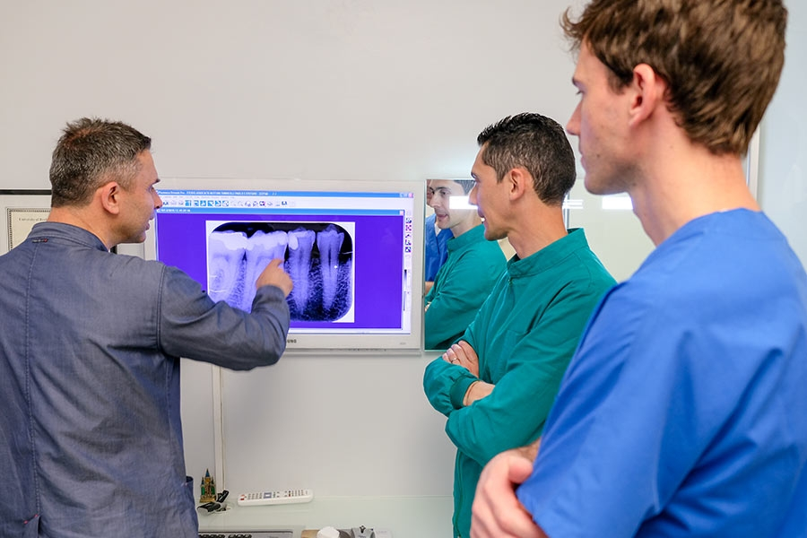

Radiologia
Diagnostica per immagini di ultima generazione: radiografia digitale e TAC Cone Beam 3D in studio.
Radiografia Digitale e TAC Cone Beam 3D
La radiologia odontoiatrica è uno strumento diagnostico fondamentale per una visione completa della situazione clinica del paziente. Il nostro studio dispone di radiografia digitale ad alta risoluzione — con sensori di ultima generazione che riducono significativamente l'esposizione ai raggi X rispetto alle lastre tradizionali — e di TAC Cone Beam per l'imaging tridimensionale.
La TAC Cone Beam 3D permette di visualizzare con precisione millimetrica la struttura ossea, le radici dentali, i canali mandibolari, i seni mascellari e qualsiasi struttura anatomica rilevante per la pianificazione chirurgica. Le immagini sono disponibili immediatamente in studio, garantendo diagnosi rapide e accurate.
- TAC Cone Beam 3D di ultima generazione
- Radiografia digitale ad alta risoluzione
- Esposizione ridotta ai raggi X
- Diagnosi immediate e precise
Come Avviene l'Esame
Un esame rapido e preciso per supportare diagnosi accurate e piani di trattamento ottimali.
Indicazione del Medico
Il dentista curante definisce il tipo di esame radiologico necessario in base alla situazione clinica: radiografia endorale, ortopanoramica o TAC 3D.
Preparazione ed Esecuzione
Il paziente viene posizionato correttamente con appositi ausili protettivi. L'esame dura pochi secondi ed è completamente indolore.
Analisi delle Immagini
Le immagini digitali sono disponibili in tempo reale sul monitor dello studio. La TAC Cone Beam fornisce una ricostruzione 3D completa immediatamente visualizzabile.
Diagnosi e Piano di Trattamento
Sulla base delle immagini, il dentista elabora o conferma la diagnosi e definisce il piano terapeutico più adatto, condividendolo con il paziente.
Domande Frequenti
Tutto quello che vuoi sapere sulla radiologia dentale, spiegato chiaramente.